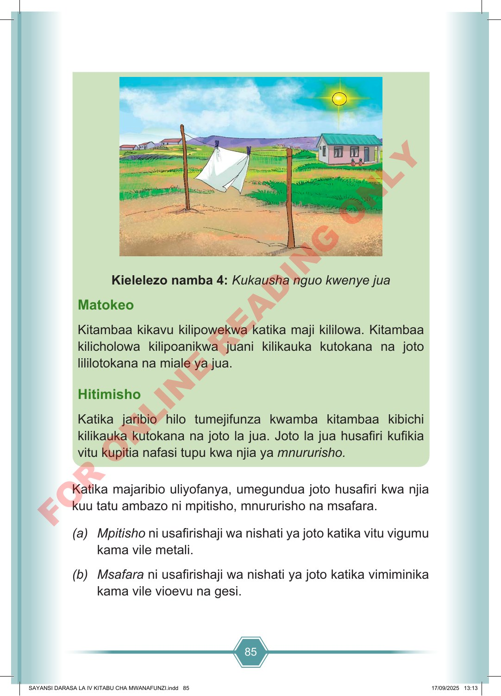

85 Katika majaribio uliyofanya, umegundua joto husafiri kwa njia kuu tatu ambazo ni mpitisho, mnururisho na msafara. (a) Mpitisho ni usafirishaji wa nishati ya joto katika vitu vigumu kama vile metali. (b) Msafara ni usafirishaji wa nishati ya joto katika vimiminika kama vile vioevu na gesi. Kielelezo namba 4: Kukausha nguo kwenye jua Matokeo Kitambaa kikavu kilipowekwa katika maji kililowa. Kitambaa kilicholowa kilipoanikwa juani kilikauka kutokana na joto lililotokana na miale ya jua. Hitimisho Katika jaribio hilo tumejifunza kwamba kitambaa kibichi kilikauka kutokana na joto la jua. Joto la jua husafiri kufikia vitu kupitia nafasi tupu kwa njia ya mnururisho. SAYANSI DARASA LA IV KITABU CHA MWANAFUNZI.indd 85 SAYANSI DARASA LA IV KITABU CHA MWANAFUNZI.indd 85 17/09/2025 13:13 17/09/2025 13:13 F O R O N L I N E R E A D I N G O N L Y